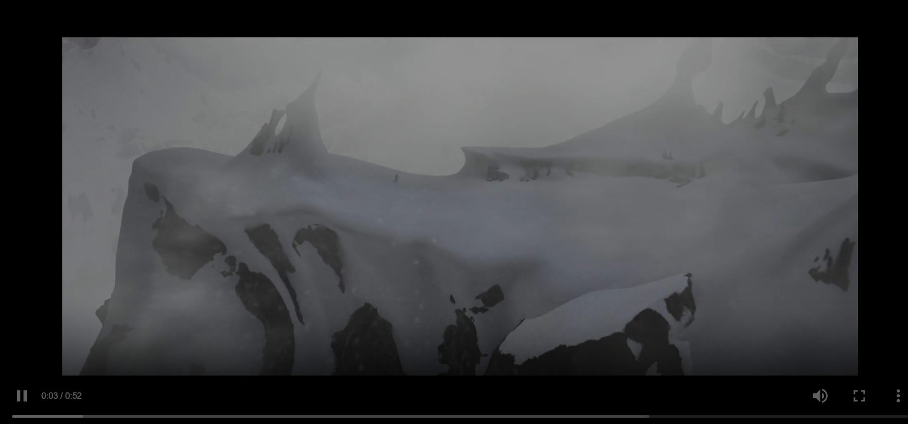
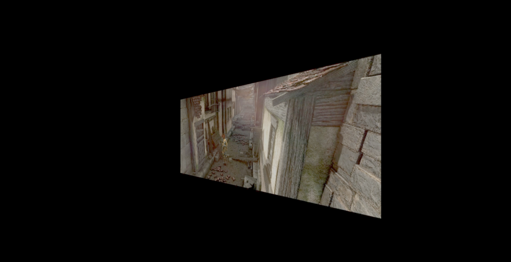

Memoria
Descripción de la práctica
En esta quinta práctica se trabaja con la distribución de medios continuos mediante el estándar
MPEG-DASH (Dynamic Adaptive Streaming over HTTP). Se analiza la estructura de manifiestos
MPD, se prepara y sirve contenido multimedia propio utilizando MP4Box (paquete GPAC)
y http-server con soporte CORS, y finalmente se integra el reproductor de referencia
dash.js en una página web propia y en una escena Three.js como textura de vídeo
adaptativa.
Análisis de manifiestos MPEG-DASH
Se han examinado dos manifiestos de ejemplo para comprender la estructura MPD y las posibilidades de adaptación que ofrecen al cliente.
Manifiesto 1 – Sony (SNE_DASH_SD_CASE1A_REVISED.mpd)
El manifiesto dispone de 1 AdaptationSet de audio con 1 única representación (AAC-HE / mp4a.40.5, 64 kbps, estéreo, 48 000 Hz), y de 1 AdaptationSet de vídeo con 4 representaciones a distintos bitrates:
- ~452 kbps – 854×480
- ~704 kbps – 854×480
- ~1006 kbps – 854×480
- ~1610 kbps – 854×480
Todas las representaciones de vídeo tienen la misma resolución: 854×480 (SD 16:9). El cliente puede conmutar entre las 4 codificaciones de vídeo para adaptarse a condiciones cambiantes de red, pero siempre a la misma resolución. No existen representaciones de audio alternativas.
- Codificaciones de audio: 1
- Codificaciones de vídeo: 4
- Resoluciones de vídeo: 1 → 854×480
Manifiesto 2 – Qualcomm (MultiResMPEG2.mpd)
El manifiesto dispone de 1 AdaptationSet de vídeo con 3 representaciones a distintas resoluciones y bitrates, y de 1 AdaptationSet de audio con 1 única representación (AAC-HE v2 / mp4a.40.29, 32 kbps, estéreo, 48 000 Hz):
- ~1198 kbps – 512×288
- ~1974 kbps – 768×432
- ~4103 kbps – 1280×720
- Codificaciones de audio: 1
- Codificaciones de vídeo: 3
- Resoluciones de vídeo: 3 → 512×288, 768×432, 1280×720
Reproductor de referencia dash.js
Se ha utilizado el reproductor de referencia dash.js Reference Client (versión 5.1.1) accesible desde la página del DASH Industry Forum para reproducir ambos manifiestos. Con la opción Auto Switch activa, el reproductor selecciona automáticamente la representación de mayor calidad disponible según el ancho de banda estimado. Al deshabilitar Allow Local Storage y habilitar Fast Switching ABR, el cambio de representaciones hacia calidades superiores se produce de forma inmediata, mientras que el descenso de calidad ocurre de forma más gradual para evitar interrupciones. Se ha comprobado además que la reproducción del flujo con subtítulos TTML en imagen (Subtitles and Captions › TTML Image Subtitles embedded (VoD)) muestra correctamente las pistas de subtítulos integradas en el manifiesto junto con audio y vídeo.
Vídeo bajo demanda con MPEG-DASH – Vídeo contador
Sobre la máquina virtual GNU/Linux (accesible por SSH en localhost:60022,
alumno:practicas) se instaló el paquete GPAC y se generó el manifiesto
counter.mpd con el siguiente comando:
MP4Box -dash 5000 -profile onDemand -out counter.mpd \
counter_audio.mp4 counter_video_180.mp4 counter_video_360.mp4El resultado es un manifiesto con 1 AdaptationSet de audio y 1 AdaptationSet de vídeo con dos representaciones:
- Audio: mp4a.40.2, ~66 kbps, mono, 44 100 Hz
- Vídeo 180p: avc1.42c00d (H.264 Baseline), ~51 kbps, 320×180
- Vídeo 360p: avc1.42c01e (H.264 Baseline), ~195 kbps, 640×360
El servidor web se arrancó en la máquina virtual con
http-server --cors (puerto 8080) y se añadió una regla de reenvío de puertos
en VirtualBox para mapear el puerto 60080 del anfitrión al 8080 de la máquina virtual.
El manifiesto es accesible desde el anfitrión en
http://localhost:60080/counter.mpd.
Ejercicio – Vídeo Sintel con streaming adaptativo
El objetivo es servir el tráiler de Sintel en tres resoluciones (480p, 720p, 1080p) mediante MPEG-DASH con streaming adaptativo. Se siguieron tres aproximaciones progresivas:
Intento 1 – Manifiesto multiplexado (sintel.mpd)
Se generó un primer manifiesto directamente a partir de los ficheros mp4 originales (audio y vídeo en el mismo track). El reproductor de referencia lanza un error en la consola de JavaScript al intentar reproducirlo: "MediaSource type not supported: video/mp4; codecs=avc1.64001e,mp4a.40.2". El problema es que dash.js no admite representaciones multiplexadas (audio+vídeo en el mismo AdaptationSet); requiere flujos separados según la especificación DASH-AVC/264.
Intento 2 – Audio y vídeo separados, una sola calidad (sintel_split.mpd)
Se extrajo el flujo de audio del fichero de 480p con ffmpeg y se recodificó
el vídeo en H.264 baseline. Se generó el manifiesto con audio e imagen en AdaptationSets
independientes:
ffmpeg -i sintel_trailer-480p.mp4 -vn -acodec copy sintel_trailer_audio-480.mp4
ffmpeg -i sintel_trailer-480p.mp4 -an -c:v libx264 -r 24 -g 24 sintel_trailer_video-480p.mp4
MP4Box -dash 5000 -profile onDemand -out sintel_split.mpd \
sintel_trailer_audio-480.mp4 sintel_trailer_video-480p.mp4El manifiesto resultante se reproduce correctamente: 1 pista de audio + vídeo en 480p.
Resultado final – ABR con tres calidades (sintel_abr.mpd)
Se repitió la extracción y recodificación para 720p y 1080p, y se generó el manifiesto definitivo que ofrece streaming adaptativo entre las tres resoluciones:
MP4Box -dash 5000 -profile onDemand -out sintel_abr.mpd \
sintel_trailer_audio-480.mp4 \
sintel_trailer_video-480p.mp4 \
sintel_trailer_video-720p.mp4 \
sintel_trailer_video-1080p.mp4El manifiesto resultante contiene:
- 1 AdaptationSet de audio: mp4a.40.2, ~129 kbps, estéreo, 48 000 Hz
- 1 AdaptationSet de vídeo con 3 representaciones:
- 480p (854×480): ~540 kbps
- 720p (1280×720): ~1036 kbps
- 1080p (1920×1080): ~2110 kbps
Con la opción Auto Switch activa, el reproductor selecciona la representación
de mayor calidad cuando el ancho de banda es suficiente, y degrada automáticamente
al limitar el ancho de banda con netem
(tc qdisc add dev enp0s3 root handle 1:0 tbf rate 200kbit buffer 1600 limit 3000).
Ejercicio 1 – Reproductor MPEG-DASH con dash.js (prac5-1)
Se ha creado la página prac5-1.html que carga la biblioteca
dash.js desde CDN e inicializa un reproductor MPEG-DASH sobre un elemento
<video id="player">. El script src/prac5-1.js se incluye
con el atributo defer para garantizar que el DOM esté disponible al ejecutarse.
El manifiesto utilizado es sintel_abr.mpd (3 calidades de vídeo + audio),
servido desde http://localhost:60080.
Captura de ejemplo (requiere servidor DASH en localhost:60080):

Ejercicio 2 – Textura de vídeo MPEG-DASH en Three.js (prac5-2)
Basándose en la práctica 3-2 (textura de vídeo sobre una malla Three.js), se ha adaptado
la escena para que la fuente del vídeo sea un stream MPEG-DASH en lugar de un fichero
local. Un elemento <video> oculto actúa como fuente: dash.js
inicializa sobre él el reproductor apuntando a sintel_abr.mpd. Cada frame
de animación, si el vídeo tiene datos suficientes (HAVE_ENOUGH_DATA),
se dibuja sobre un canvas de 640×272 píxeles (ratio 2.35:1 del tráiler de Sintel) que
sirve de textura (THREE.Texture) a un plano (PlaneGeometry)
en rotación. La escena usa WebGL2 y se degrada con un mensaje de error si el navegador
no lo soporta.
Captura de ejemplo (requiere servidor DASH en localhost:60080):

Dificultades encontradas
La principal dificultad fue que dash.js rechaza representaciones multiplexadas
(audio y vídeo en el mismo AdaptationSet), lanzando el error
"MediaSource type not supported". La solución requirió desmultiplexar los
ficheros con ffmpeg y recodificar el vídeo a H.264 baseline para maximizar
la compatibilidad entre navegadores antes de generar el manifiesto con MP4Box.
Al generar el manifiesto ABR final (sintel_abr.mpd) con las tres pistas
de vídeo pero sin incluir explícitamente el audio, el reproductor no reproducía sonido.
Fue necesario añadir manualmente el AdaptationSet de audio (apuntando a
sintel_trailer_audio-480_dashinit.mp4) al XML del manifiesto para obtener
el resultado correcto.
En la práctica 5-2, la reproducción automática del vídeo (necesaria para que la textura
se actualice) está bloqueada por los navegadores hasta que haya interacción del usuario.
Se gestionó registrando listeners de pointerdown, click y
keydown que llaman a video.play(), de forma que el primer
toque del usuario desbloquea la reproducción y la textura comienza a animarse.